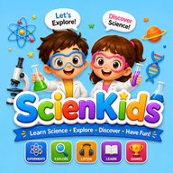

Transformez votre maison en labo de science : éveille la curiosité
Les enfants sont des scientifiques nés. Curieux de tout, ils passent leur temps à observer et à tester le monde. Découvrez comment transformer de simples ingrédients de cuisine en expériences scientifiques mémorables.
1. L'importance de la science pratique à la maison
Faire de la science à la maison sort cette discipline des manuels scolaires rigides pour en faire une aventure vivante. En manipulant, l'enfant développe son esprit critique et apprend à tester ses propres hypothèses.
2. Des expériences simples, amusantes et sécurisées
Nul besoin de matériel coûteux pour explorer la physique et la chimie de base :
- Le lait magique (Tension superficielle) : Quelques gouttes de colorant dans du lait, un coton-tige imbibé de liquide vaisselle, et voilà une explosion de couleurs qui explique la chimie moléculaire.
- Les raisins danseurs (Densité) : Plongez des raisins dans de l'eau gazeuse et observez la poussée d'Archimède en action grâce aux bulles de CO2.

Le laboratoire virtuel idéal pour les jeunes chercheurs ! Conçue pour guider les enfants du primaire à travers les mystères de l'astronomie, de la physique et de la nature par le jeu interactif.
3. Poser les bonnes questions
Plutôt que de donner la réponse immédiatement, demandez à votre enfant : "À ton avis, que va-t-il se passer ?". Cela stimule sa réflexion logique et valorise son intelligence.
4. Cultiver l'amour de la découverte
En associant les manipulations physiques à des outils numériques adaptés, vous offrez à votre enfant toutes les clés pour devenir un penseur autonome et passionné par le monde qui l'entoure.
Questions fréquentes
Les expériences de cuisine sont-elles sûres ?
Oui, tant que vous utilisez des produits alimentaires courants (vinaigre, bicarbonate) sous la surveillance d'un adulte.
Comment la science aide-t-elle le langage ?
Elle introduit des mots riches en contexte (dissoudre, flotter, réaction) qui enrichissent considérablement le vocabulaire de l'enfant.
L'application ScienceKids est-elle sécurisée ?
Tout à fait. ScienceKids est conçue selon des normes de confidentialité strictes et est garantie 100% sans publicité.